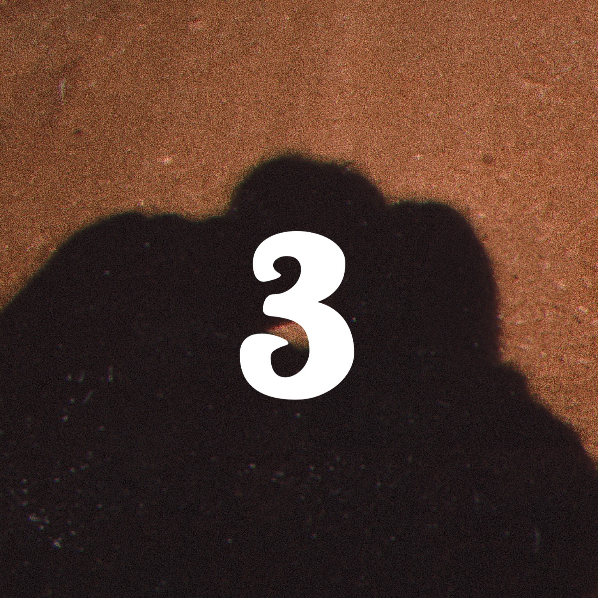
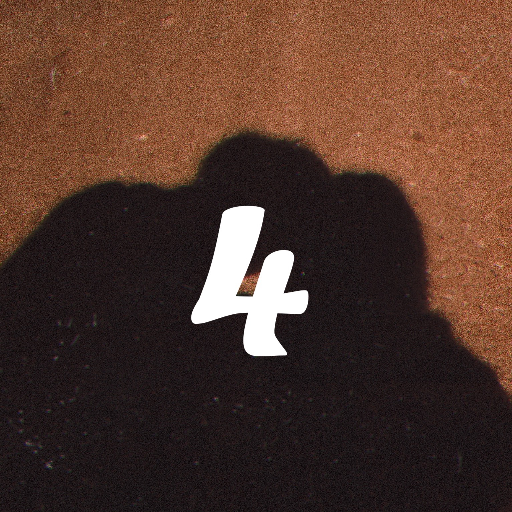
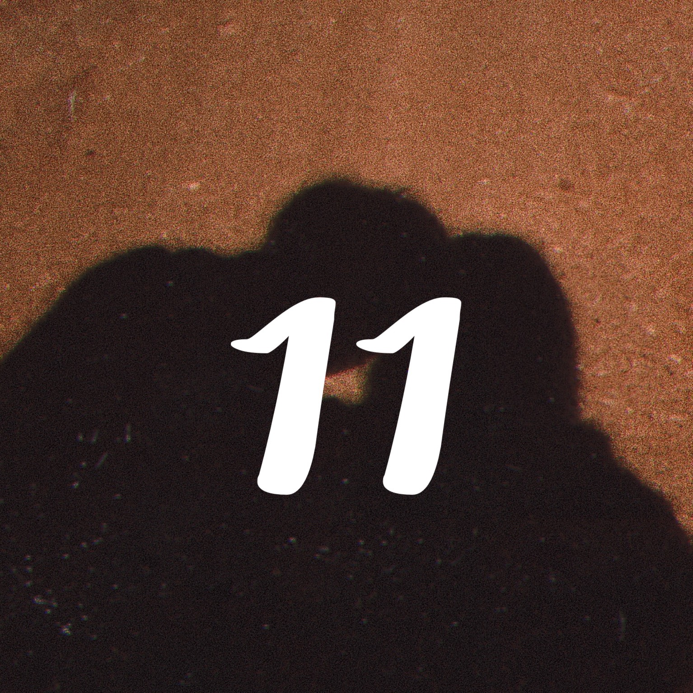

Thần số học 1

Ưu điểm của người sở hữu thần số học 1
- Những người có số đường đời số 1 sở hữu tài năng thiên bẩm để trở thành lãnh đạo. Số 1 là những người có tính cương quyết và hoàn toàn kiểm soát được bản thân trong mọi hoàn cảnh.
- Bạn có thể trở thành người thủ lĩnh của đội nhóm, công ty hoặc tổ chức. Bạn làm việc với tinh thần hành động, sáng tạo và sẵn sàng cải cách.
- Bạn không liên tục tìm kiếm các giải pháp, hướng đi mới. Bạn luôn muốn thành lập tổ chức, đội nhóm vươn lên dẫn đầu và về đích. Để đạt được mục tiêu đề ra, bạn luôn phải tư duy tích cực và phát triển, bạn sẽ tìm kiếm các giải pháp để đạt được mục tiêu và không ngừng cho đến khi hoàn thành.
- Bạn có trách nhiệm cao, không chỉ trong công việc mà còn với mọi người. Bạn là người có năng lực, biết khai thác các nguồn lực để làm việc. Nếu đã nhận nhiệm vụ, bạn thường hoàn thành tốt hoặc khi đã hứa điều gì, bạn cũng sẽ thực hiện đúng.
- Bạn là người có yêu cầu cao trong công việc, nghiêm túc với bản thân. Bạn rất ghét bàn lùi, ghét những người hay lo lắng, chậm chạp. Đồng thời, bạn không thích những người không có chí tiến thủ và học hỏi. Quan điểm của bạn là: Không gì là không thể.
- Trong tình cảm, số 1 rất chung thuỷ, ít ghen tuông. Có trách nhiệm với người mình yêu và họ yêu cầu người mình yêu cũng như vậy.
- Người số 1 là người dẫn đầu trong các con số, là người cá tính, luôn thúc đẩy người khác tiến lên, thích làm mọi thứ và không thích nhận sự giúp đỡ.
Nhược điểm của thần số học số 1
- Vì có tài lãnh đạo, thủ lĩnh thiên bẩm nên bạn có xu hướng là người bảo thủ, độc đoán trong mọi công việc. Bạn luôn muốn người khác làm theo những gì bạn đã vạch sẵn. Bạn không thích tranh luận và ít khi nghe theo ý kiến của người khác. Điều này không tốt cho người lãnh đạo, vì như vậy sẽ khiến cho nhân viên, những người cấp dưới dễ sinh ra bất mãn.
- Với năng lượng đặc biệt, có những khi bạn trở nên độc đoán, ích kỷ và mê hoặc người khác. Bạn dễ rơi vào trạng thái cô độc. Vì vậy, người có thần học số 1 là người ít bạn.
- Bạn là người sáng tạo và độc lập. Nhưng nếu đi sai đường và tham vọng bị suy sụp, bạn dễ rơi vào trạng thái đối lập, trở nên phụ thuộc vào người khác và sinh lòng bất mãn với cuộc sống.
- Bạn có thể dễ dàng tha thứ cho ai đó nếu làm việc mà phạm lỗi. Nhưng với những kẻ phản bội, kẻ thù số 1 không bao giờ tha thứ hay quên đi dễ dàng. Do đó bạn dễ khiến bản thân trở thành kẻ tàn nhẫn và dễ đau khổ.
Thần số học 2

Ưu điểm của người sở hữu thần số học 2
- Số 2 trong thần số học là người sinh ra để yêu và được yêu. Họ coi trọng tình cảm gia đình, tình bạn, khát khao thể hiện tình yêu thương. Họ rất muốn người khác đối xử lại với mình như vậy, từ cử chỉ hay hành động.
- Người số 2 rất khoan dung, đồng cảm, lắng nghe, kết nối. Họ có khả năng hòa giải tốt, có nhiều phương pháp để hàn gắn, hòa giải mâu thuẫn. Họ không không đành lòng nhìn thấy sự đổ vỡ nào
- Nếu sở hữu số 2, bạn là người sắc sảo và nhạy cảm. Đồng thời dễ dàng đồng cảm với người khác và thường đặt lợi ích của người khác lên trên lợi ích bản thân. Người số 2 có suy nghĩ sâu sắc, luôn muốn tìm hiểu về những bí ẩn và những khía cạnh phức tạp của cuộc đời.
- Bạn là người có trực giác và tâm linh tốt. Bạn đại diện cho nhóm người có khả năng ngoại giao tốt.
- Số 2 dễ tha thứ, dễ đồng cảm với niềm vui và nỗi buồn của người khác. Họ dễ kết nối mọi người với nhau, ngoài là chuyên gia hòa giải họ còn là chuyên gia kết nối.
- Người số 2 rất giỏi làm việc nhóm, có khả năng giao tiếp nhẹ nhàng. Số 2 cho người khác cảm giác an toàn dễ gần khiến họ tin tưởng và yên tâm hơn khi giao tiếp.
- Ưu điểm nổi trội của số 2 là không tham vọng, không thích dẫn đầu. So với quyền lực và tiền bạc thì họ thích tình cảm hơn, nói họ là người sống thiên về tình cảm quả không sai.
Nhược điểm của thần số học số 2
- Số 2 trong thần số học là người luôn mong muốn được yêu thương và trao yêu thương nên bạn dễ bị rơi vào tình trạng kiệt sức và tổn thương nếu không được người khác trao yêu thương theo cách bạn mong muốn.
- Bạn sống quá cảm xúc, nên dễ bị rơi vào tình trạng không kiểm soát được tâm trạng, dễ bị khủng hoảng tinh thần.
- Là người hay lưỡng lự, không quyết đoán dễ bị mắc sai khi không nghe theo trực giác mà lắng nghe theo lý trí. Họ sẽ dễ có những phút bốc đồng bồng bột gây ra sự mất kiểm soát của bản thân từ đó có những quyết định sai lầm.
Thần số học 3

Ưu điểm của người sở hữu thần số học 3
- Bạn là người lạc quan, vô tư, vui vẻ có kỹ năng giao tiếp và truyền đạt.
- Bạn là người có khả năng tư duy. Đầu óc nhanh nhạy, nhạy bén là người luôn tiên phong lãnh đạo tổ chức.
- Bạn là người linh hoạt, luôn nhìn thấy cơ hội trong mọi hành động. Trong đầu bạn luôn có rất nhiều ý tưởng. Chỉ cần có nội dung và tập trung suy nghĩ thì người khác khó có thể theo kịp bạn.
- Bạn có khả năng sử dụng ngôn từ tốt, cùng với tư duy linh hoạt. Nên trong mọi trường hợp hoàn cảnh bạn đều có thể sử dụng ngôn từ để truyền đạt thông điệp cho người khác hiểu được. Đó là lý do người khác gọi bạn là người có năng lượng truyền cảm hứng
- Bạn là người vui vẻ, hài hước và đặc biệt giỏi nắm bắt tâm lý người khác. Vì vậy bạn rất biết cách vận dụng những kỹ năng này của mình trong cách nói chuyện, giao tiếp giúp người khác luôn dành tình cảm yêu mến cho bạn, đánh giá bạn cao hơn.
- Ngoài ra một số bạn mang số 3 trong thần số học là người có năng khiếu nghệ thuật, nghệ sĩ có đam mê ca hát, hội họa, văn học. Không ít người thành công trên con đường nghệ thuật.
Nhược điểm của thần số học số 3
- Bạn dễ bị rơi vào trạng thái mất hứng, chán nản khi đang truyền đạt một vấn đề gì đó mà cảm xúc bị cuốn vào quá cao.
- Đôi khi bạn sẽ bị sự tùy hứng của bản thân làm ảnh hưởng công việc. Bạn cần lên kế hoạch mục tiêu rõ ràng để tránh đi lệch hướng
- Với những người lạ thì người số 3 luôn vui vẻ, dễ thương. Nhưng với những người thân quen thì họ luôn muốn ăn hiếp dễ khiến người khác khó chịu hoặc stress.
- Đặc biệt người có thần số học số chủ đạo 3 là người có trí não phát triển mạnh nên dễ có tính gia trưởng, và thiếu kiên nhẫn dễ lấn át người xung quanh vì họ không đủ mạnh và có tư duy kém hơn mình.
Thần số học 4

Ưu điểm của người sở hữu thần số học 4
- Thần số học số 4 là người có khả năng phân tích tốt, bạn có thể phân tích một vấn đề ở nhiều khía cạnh, phân tích tỉ mỉ, sâu và đúng. Bạn có khả năng trở thành chuyên gia phân tích nếu đúng với lĩnh vực bạn đam mê
- Bạn là người trung thành, kiên định, bạn yêu thích cái gì cũng có lý do rõ ràng. Chỉ cần bạn cam kết một vấn đề gì đó, bạn sẽ làm việc chăm chỉ để hoàn thành và chứng minh nó.
- Người số 4 sống thực tế, không màu mè, không lòng vòng. Mọi thông tin khi nói với họ phải rõ ràng rành mạch. Họ không dễ lung lay bởi các yếu tố hay ý tưởng mới. Họ luôn tin vào những kế hoạch vững chắc có tính khả thi cao.
- Người sở hữu nhân số học số 4 là người có năng lượng của người thầy có khả năng dẫn dắt người khác. Trong công việc, thần số học số 4 là người cẩn thận và trách nhiệm. Còn trong gia đình họ là người nghiêm khắc, kỷ luật, gương mẫu và coi trọng sự an toàn của các thành viên.
Nhược điểm của thần số học số 4
- Bạn dễ bị công việc cuốn vào, dễ bị suy nghĩ, phân tích quá nhiều dẫn đến bản thân rơi vào tình trạng căng thẳng, mất cân bằng
- Bạn nên học cách cân bằng lại cảm xúc của mình. Nếu không bạn sẽ dễ mất an yên do những tham vọng không thực hiện được rồi sinh ra tức giận. Từ đó dẫn đến các vấn đề về tâm lý, đời sống dễ bị kéo lệch về hướng vật chất.
- Người có số 4 trong thần số học quá cứng nhắc và độc đoán, bạn luôn cho rằng mình đúng trong mọi vấn đề, không cho phép bản thân lung lay, không linh hoạt.
- Bạn bảo thủ và luôn cho rằng những gì mình nghĩ, mình đã trải qua là đúng đắn. Mặt khác, sự thẳng thắn chia sẻ kiến thức, sự góp ý hay tính kỷ luật cao của bạn đôi khi có thể tạo ra mâu thuẫn, xung đột.
Thần số học 5

Ưu điểm của người sở hữu thần số học 5
- Người sở hữu nhân số học số 5 có trực giác rất tốt, với cảm xúc sâu sắc và tư duy nghệ thuật cao. Do đó bạn diễn đạt cảm xúc một cách vẹn toàn nhất (thông qua các hình thức như vẽ, viết, điêu khắc…) là một trong những điều tinh tế mà người khác mơ đạt tới.
- Bạn có khả năng thích nghi tốt. Vì yêu thích tự do nên bạn hầu như không gắn bó với bất kỳ ý tưởng, công việc, mối quan hệ nào. Vì vậy linh hoạt để dễ dàng thích nghi trong môi trường mới là điểm mạnh của bạn.
- Bạn luôn cố gắng thoát khỏi sự trói buộc, gò bó. Bạn là người khéo léo để mở rộng các mối quan hệ, giao lưu học hỏi từ người mới.
- Người số 5 trong thần số học có nguồn năng lượng tốt, luôn muốn được sống vui vẻ thoải mái theo cách bạn muốn. Do đó bạn cũng mong người khác được sống vui vẻ, đây là bản chất từ tâm.
- Số 5 cũng là người sắc sảo, nhưng trung thực và giàu lòng nhân ái. Bạn sẵn sàng giúp đỡ những người khó khăn. Bạn cũng không ngại vạch trần những sự dối trá.
Nhược điểm của thần số học số 5
- Vì yêu thích tự do, không thích sự gò bó, ràng buộc nên bạn dễ mắc nhiều sai lầm trong công việc, dễ đánh mất cơ hội công việc của mình vì không kiên nhẫn, thiếu hợp tác.
- Sự buồn chán thường khiến bạn lướt qua hơn là tìm kiếm chính xác chiều sâu của kinh nghiệm.
- Bạn cũng thuộc tuýp người dễ đam mê, do đó hãy thận trọng với những thú vui tiêu cực. Đôi khi bạn cũng đanh đá, gắt gỏng, nóng nảy, bồn chồn, bất an.
- Bạn là người cả thèm chóng chán, hay thay đổi dễ bị phân tâm và đôi khi tò mò. Do đó bạn khó duy trì sự tập trung đủ lâu để thực hiện các dự án và lời hứa khiến bạn không có khả năng và không đáng tin cậy
- Bạn không có mục đích, định hướng rõ ràng. Bạn sống theo cảm xúc và tự do nên đã tốn rất nhiều thời gian cho những trải nghiệm vô bổ và bỏ lỡ đi những cơ hội giúp bạn thành công.
Thần số học 6
Ưu điểm của người sở hữu thần số học 6
- Sở hữu số 6, bạn là người giàu tình cảm, tốt bụng và nhân hậu. Bạn sẵn sàng giúp người khác một cách chân thành. Chỉ cần mở lời xin sự giúp đỡ là bạn sẽ đồng ý, đặc biệt những người khó khăn
- Số 6 là người có khiếu thẩm mỹ, bạn có thể vẽ đẹp viết tốt, sáng tác hay. Bạn có thể có đôi tai biết thưởng thức và khứu giác rất tinh nhạy. Bạn yêu cái đẹp, dễ rung động trước cái đẹp thích làm cho mọi người và mọi vật đẹp lên
- Là người giàu tình cảm, yêu thương mọi người nên bạn ghét sự bất công trong mọi việc
- Bạn là người dễ tha thứ, dễ nguôi giận, chỉ cần họ nhận lỗi và biết sửa sai bạn sẽ vui vẻ bỏ qua. Bạn cũng là người thích kể chuyện để tạo niềm vui và tiếp thêm sức mạnh yêu thương cho mọi người.
Nhược điểm của thần số học số 6
- Bạn hay ôm đồm, hay buôn chuyện nếu rảnh rỗi. Vì vậy cần cẩn thận khi phán xét về người khác.
- Bạn không thích làm việc dưới trướng người khác khi mà năng lực của bạn đã đạt đến một mức độ nhất định. Không muốn bị người khác sai khiến, chỉ trích. Nhìn chung bạn quá coi trọng thể diện.
- Người số 6 khá bị động, thiếu quyết đoán trong cuộc sống. Bạn luôn nỗ lực làm hài lòng người khác và giữ hòa khí nên cho phép bản thân thường xuyên bị lợi dụng. Người số 6 sẵn sàng hy sinh vì người khác mà quên đi hạnh phúc của bản thân mình.
- Bạn dễ rơi vào trạng thái khó chịu khi người khác không làm theo những gì mà bạn làm, bạn suy nghĩ và sắp xếp.
Thần số học 7

Ưu điểm của người sở hữu thần số học 7
- Sở hữu số 7, bạn luôn tìm kiếm bản chất sâu bên trong của vấn đề. Trong đầu bạn luôn hoài nghi và đặt câu hỏi tại sao? Sau đó sử dụng tất cả kiến thức sẵn có phân tích đến khi đạt được câu trả lời vừa ý.
- Nhìn chung, những người sở hữu con số chủ đạo 7 rất thông thái. Họ sở hữu một kho kiến thức khổng lồ từ xã hội, văn hóa cho đến những chuyện trên trời dưới biển nhờ quá trình trải nghiệm của bản thân. Từ đó tích lũy kinh nghiệm và chia sẻ cho những người xung quanh.
- Không những thế, bạn còn có được năng lực trực giác rất tốt. Trực giác ở mỗi người có thể biểu hiện khác nhau. Có thể là sự linh cảm, bạn cảm giác được điều gì đó sắp xảy ra, có thể là sự đồng cảm sâu sắc với người khác. Đó cũng có thể là sự thấu thị, nhìn được những điều mà người khác không thấy. Hoặc cũng có thể là một dạng kết nối tâm linh nào đó.
- Bạn luôn muốn chia sẻ những gì mình biết cho người khác. Bạn muốn đưa kiến thức của mình ra bên ngoài. Những gì bạn hướng dẫn luôn có tính thuyết phục và dễ tiếp thu.
- Bạn có khả năng phân tích rất tốt, nhờ khả năng ham học hỏi mà bạn có thể phân loại thông tin, tách những thông tin hữu ích ra khỏi những thông tin vô nghĩa một cách chính xác và thực tế.
- Bạn thẳng thắn, thật thà và tốt bụng
Nhược điểm của thần số học số 7
Thần số học 8
Ưu điểm của người sở hữu thần số học 8
- Số 8 là người tự tin, độc lập là người mạnh về trí tuệ, giỏi về các con số. Có khả năng kinh doanh, quản lý tốt
- Khả năng chịu áp lực, điều hành là thế mạnh vượt trội của thần số học số 8. Họ có khả năng am hiểu các vấn đề về tài chính và thường hứng thú với các ngành ngân hàng, chứng khoán.
- Họ là người có tham vọng, mục tiêu rõ ràng, họ sẽ làm bằng mọi cách để đạt được mục tiêu của mình đã đề ra. Những cảm giác tốt đẹp khi mà thành công mang lại cho họ thêm nguồn năng lượng để đi tiếp.
- Người số 8 trong thần số học có một tinh thần bền bỉ và kiên trì, những thành công của họ đạt được một phần nhờ vào tính kiên trì, kiên nhẫn và quyết tâm mọi thứ sẽ đến. Họ sẵn sàng đấu tranh vì chắc chắn rằng sự thịnh vượng đang ở phía bên kia.
- Số 8 là con số biết cân bằng, hiểu ý nghĩa của việc cho và nhận. Họ luôn ghi nhớ và đánh giá cao bất kỳ sự giúp đỡ nào mà bạn nhận được. Họ hiểu rằng thành công không phải chỉ một cá nhân mà là của cả đội ngũ.
Nhược điểm của thần số học số 8
- Thần số học số 8 là người không giỏi thể hiện cảm xúc, không biết cách bày tỏ tình cảm. Không biết nói lời biết ơn hay cảm ơn và sự trân trọng với người khác, làm cho việc xây dựng các mối quan hệ gặp khó khăn
- Nếu sở hữu số 8, bạn là người có tính độc lập và mạnh mẽ quá cao. Do đó, bạn thường sẽ khó chịu và tỏ ra ngang bướng khi có ai đó can thiệp vào việc của mình. Là người thẳng thắn, trực tính, bạn có thể hay tranh cãi và ít để ý đến cảm xúc của người khác
- Người sở hữu nhân số học số 8 có cái tôi khá lớn. Nên thường gặp trắc trở trong các mối quan hệ tình cảm. Ít khi nào có được suôn sẻ ngay từ đầu .
- Bạn là người dành nhiều thời gian cho công việc. Vì vậy, bạn dễ rơi vào trạng thái không quan tâm tới sức khỏe của mình, về sau bạn dễ gặp nhiều vấn đề sức khỏe.
Thần số học 9

Ưu điểm của người sở hữu thần số học 9
- Nếu sở hữu số 9, bạn là người có ước mơ, hoài bão, có trách nhiệm và lý tưởng sống. Đặc biệt là bạn luôn cảm thấy mình cần sống có trách nhiệm: Trách nhiệm với bản thân, với công việc, với cuộc sống và với cộng đồng. Bạn được đánh giá là một người nhiệt tình trong cuộc sống.
- Số 9 là một người có tinh thần nhân đạo cao độ, và cũng là một người có ý chí, nghị lực mạnh mẽ. Họ rất dũng cảm, miễn là có ích lợi cho mọi người thì bạn không ngại bất cứ việc gì. Thậm chí, họ có thể hy sinh lợi ích bản thân để làm những việc như vậy. Đó là lý do họ luôn mang tiền của gia đình đi cho bên ngoài.
- Bạn có thể tạo dựng lòng tin từ người khác. Có thể tỏa sáng khi mang năng lượng tích cực, năng lượng này giúp bạn thu hút sự chú ý của mọi người, họ sẽ có cái nhìn thiện cảm và tin tưởng bạn hơn
- Trong công việc, bạn chăm chỉ, yêu cầu với bản thân cao, luôn có trách nhiệm với việc mình làm. Bạn có năng khiếu của một nhà lãnh đạo bẩm sinh.
- Một điểm rất tốt của người nắm giữ con số chủ đạo 9 là bạn luôn bao dung với người khác. Bạn không vạch ra ranh giới bất kỳ với chủng tộc, tôn giáo hay lối sống nào. Bạn có thể thấu hiểu được nỗi đau, khó khăn của những người nghèo khó, khuyết tật, những người yếu thế. Chính điều đó mang lại sự tôn trọng cho mọi người.
Nhược điểm của thần số học số 9
- Một điểm rất tốt của người nắm giữ con số chủ đạo 9 là bạn luôn bao dung với người khác. Bạn không vạch ra ranh giới bất kỳ với chủng tộc, tôn giáo hay lối sống nào. Bạn có thể thấu hiểu được nỗi đau, khó khăn của những người nghèo khó, khuyết tật, những người yếu thế. Chính điều đó mang lại sự tôn trọng cho mọi người.
- Số 9 là người thiếu tính kiên nhẫn và kiên định. Bạn dễ bỏ giữa chừng những công việc đang làm, không đi đến cuối cùng. Người số 9 làm việc theo cảm hứng rất mạnh, tức là có cảm hứng bạn mới làm, không thì dễ bỏ dở.
- Bạn không giỏi trong việc nhìn người, vì tính nhân đạo, thương người bạn dễ bị người khác lợi dụng.
- Khi gặp vấn đề bạn thường có xu hướng tự giải quyết, không thích người khác can thiệp hoặc xử lý giúp. Bạn cũng dễ bị ảnh hưởng bởi những vấn đề tiêu cực trong quá khứ.
Thần số học 10
Ưu điểm của người sở hữu thần số học 10
- Có tố chất trở thành lãnh đạo: Sở hữu tính cách muốn trở thành người tiên phong nên số 10 có tiềm năng để làm lãnh đạo, dẫn dắt đội nhóm. Họ cũng là người rất chủ động trong công việc và không ngại thay đổi.
- Tập trung: Nhân số học số 10 biết mình muốn gì, cần gì. Họ sẽ có sự tập trung để đạt được mục tiêu đã đặt ra. Trong công việc, họ có sự cống hiến rất cao.
- Sáng tạo: Làm việc hay nói chuyện với người số 10, bạn sẽ luôn cảm thấy vui vẻ, năng lượng và tìm ra được cách giải quyết vấn đề bởi họ sẽ tận dụng sự sáng tạo của mình trả lời cho bạn.
- Hòa đồng: Vì khả năng thích nghi và linh hoạt cao nên số 10 rất hòa đồng, cũng như biết cách được tình cảm từ mọi người. Họ sẵn sàng lắng nghe nhưng không can thiệp quá sâu vào cuộc sống của người khác.
- Tự tin, năng động: Bản thân người sở hữu nhân số học số 10 sinh ra đã có sự tự tin và năng động dù cho họ có vẻ ngoài, hoàn cảnh ra sao.
Nhược điểm của thần số học số 10
- Tự tin thái quá: Trong nhiều trường hợp, họ tự tin thái quá dẫn đến thích áp đặt quan điểm vào người khác. Điều này sẽ tạo nên sự bất hòa giữa các thành viên.
- Quá an toàn: Số 10 đôi khi tự tạo cho mình cảm giác an toàn ảo và sống trong đó thay vì vươn tới những mục tiêu cao hơn. Điều này sẽ làm cho những thành viên trong đội nhóm cảm thấy khó chịu.
- Không thích bị góp ý, chỉ trích: Do cái tôi cao nên số 10 không muốn bị chê bai về những đề xuất của mình, thậm chí họ tỏ ra khó chịu, nổi nóng với người góp ý. Điều này sẽ khiến cho số 10 gặp một số bất lợi trong giao tiếp ở công sở.
- Coi trọng sự hoàn hảo: Điều này sẽ khiến số 10 rơi vào áp lực do bản thân mình tạo ra.
Thần số học 11

Ưu điểm của người sở hữu thần số học 11
- Bạn là người đáng tin cậy. Bất kể trong cuộc sống hay trong công việc, bạn đều rất công tâm và trung thực.
- Bạn là người khoan dung đồng cảm, lắng nghe và giàu lòng nhân ái. Không tham vọng, luôn hy sinh, chia sẻ vì bạn đời của mình.
- Số 11 có năng lực tâm linh và trực giác rất tốt, bạn có thể cảm nhận được năng lượng của vũ trụ. Qua đó, bạn có thể biến những giấc mơ thành sự thật.
- Bạn là một người đồng cảm, luôn đặt lợi ích của người khác lên lợi ích cá nhân của mình. Ban trung thực, công tâm luôn là người đứng ra hòa hợp số đông, giãi bày tâm sự trong lòng. Hơn nữa bạn có thể dành rất nhiều thời gian để tương tác cùng họ.
Nhược điểm của thần số học số 11
- Bạn thường dễ bị thu hút bởi đời sống vật chất, mà quên đi sứ mệnh của mình. Dễ bị rơi vào cám dỗ là điều số 11 cần chú ý.
- Vì mang trong mình con số 1, nên bạn có cái tôi khá lớn, dễ tự ái và không biết lắng nghe ý kiến của người khác
- Bạn có nhiều tham vọng và có khả năng để đạt được tham vọng đó. Tuy nhiên khả năng thất bại sẽ rất cao nếu bạn không thể hiện được năng lực và sự tự tin.
- Là người dễ bị tác động và suy sụp. Một khi bị tác động bạn sẽ mất đi phương hướng và không biết nên làm gì tiếp theo.
- Bạn có một phần của thần số học số 2, quá yêu thương người khác cũng khiến bạn dễ bị kiệt sức.
- Bạn cần học cách đón nhận sự giúp đỡ từ người khác, thay vì một mình tự cố gắng và tỏ ra bất cần.
- Sự nhạy cảm quá mức của số 11, khiến bạn trở thành người nhút nhát, ngại đối đầu. Sợ bị tổn thương nên bạn luôn muốn che dấu và không có tính quả quyết.
Thần số học 22

Ưu điểm của người sở hữu thần số học 22
- Thần số học số 22 là người mạnh mẽ, có tầm nhìn và năng lực. Nhờ khả năng vô hạn, họ sẽ dễ dàng thành công trên con đường mình chọn. Quan trọng hơn, nếu tìm đúng người đồng hành thì họ sẽ nhanh chóng đạt được những điều mong muốn, có cuộc sống thành công hơn rất nhiều
- Với nguồn năng lực mạnh mẽ, người số 22 dễ dàng truyền cảm hứng, giúp thay đổi cuộc sống của người khác. Số 22 luôn có một sức sống căng tràn, tinh thần khát khao chinh phục làm cho cuộc sống trở nên đầy màu sắc.
- Người sở hữu thần số học số 22 khá nhạy cảm và có trực giác cao. Họ hội tụ được gấp đôi ý thức tâm linh mạnh mẽ của số 11, cùng tính thực tế của số 4.
- Người mang số 22 có khả năng khắc phục những vấn đề trong cuộc sống rất tốt. Sự thực tế, chính trực và định hướng tốt khiến cho số 22 luôn là chỗ dựa đáng tin cậy của người khác.
- Người mang số chủ đạo 22 hiếm khi từ chối một thử thách nào của cuộc sống. Ở những môi trường khó khăn và nguy hiểm họ vẫn có thể tính táo và thận trọng để hoàn thành nhiệm vụ của mình. Họ có khả năng chịu trách nhiệm là vô hạn và không có thói quen dựa dẫm.
- Với tố chất thiên bẩm trong việc sắp xếp, tổ chức và lập kế hoạch dài hạn. Cùng với khả năng kiểm soát cảm xúc những vấn đề trong cuộc sống sẽ rất ít ảnh hưởng đến người mang thần số học số 22
Nhược điểm của thần số học số 22
- Số 22 là con số vua nên người sở hữu nó có xu hướng quá đề cao bản thân. Việc quá tự tin và bảo thủ về bản thân sẽ làm cho người xung quanh có cái nhìn không tốt về bạn. Biết rằng người số 22 có tư duy tốt và cái nhìn tổng thể về các vấn đề trong cuộc sống.
- Họ ít có niềm tin với người khác, vì vậy họ có khuynh hướng giành lấy quyền kiểm soát tình thế. Và nhiều khi có ý muốn chi phối người khác. Nhưng họ cũng cần đặt niềm tin và trao quyền cho người khác. Để được thảnh thơi hơn và tránh những rắc rối không cần thiết
- Một số trường hợp người có số chủ đạo 22 không nhận ra được sức mạnh của mình. Thường họ sẽ biến mình là người thực dụng. Đam mê vật chất và có nhiều tiêu cực trong cuộc sống.
Thần số học 33